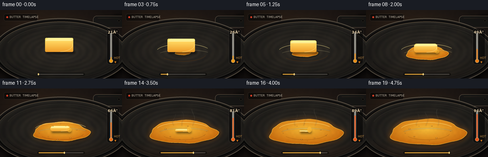
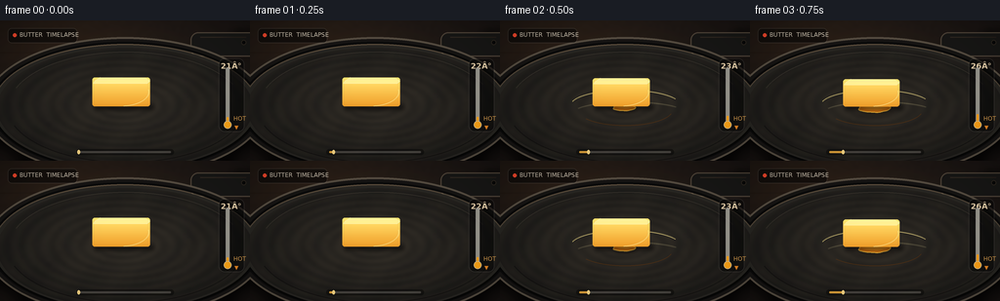

CODING AGENTS AS PIXEL WORLD MODELS
traex/GPT-5.6-Sol · phygen_098
点击播放 · 原生 RGB 像素
逐轮保存的候选
回放视频、检查图与代码变化。
每份候选均可单独播放。实际图片检查记录在下方工具轨迹中。
候选 01播放与检查图
点击播放 · 原生 RGB 像素


展开代码变化
--- 上一保存版本
+++ 本次保存版本
@@ -0,0 +1,274 @@
+from pathlib import Path
+import math
+import numpy as np
+from PIL import Image, ImageDraw, ImageFont, ImageFilter
+import artifact_io
+
+# Fixed-camera, supersampled food-photography style animation.
+W, H, N, S = 256, 144, 20, 4
+SW, SH = W*S, H*S
+ROOT = Path(__file__).resolve().parent
+rng = np.random.default_rng(1987)
+
+try:
+ FONT_BOLD = ImageFont.truetype('/usr/share/fonts/truetype/dejavu/DejaVuSans-Bold.ttf', 7*S)
+ FONT_SMALL = ImageFont.truetype('/usr/share/fonts/truetype/dejavu/DejaVuSans.ttf', 6*S)
+ FONT_TEMP = ImageFont.truetype('/usr/share/fonts/truetype/dejavu/DejaVuSans-Bold.ttf', 8*S)
+except OSError:
+ FONT_BOLD = FONT_SMALL = FONT_TEMP = ImageFont.load_default()
+
+def sc(v): return int(round(v*S))
+def box(b): return tuple(sc(v) for v in b)
+def pts(p): return [(sc(x), sc(y)) for x, y in p]
+
+def smoothstep(x):
+ x = max(0.0, min(1.0, x))
+ return x*x*(3-2*x)
+
+def alpha_layer(base, painter, blur=0):
+ layer = Image.new('RGBA', (SW, SH), (0,0,0,0))
+ painter(ImageDraw.Draw(layer), layer)
+ if blur:
+ layer = layer.filter(ImageFilter.GaussianBlur(sc(blur)))
+ base.alpha_composite(layer)
+
+def make_mask(draw_fn, blur=0):
+ m = Image.new('L', (SW, SH), 0)
+ draw_fn(ImageDraw.Draw(m))
+ return m.filter(ImageFilter.GaussianBlur(sc(blur))) if blur else m
+
+def gradient_paste(base, rgb_array, mask):
+ im = Image.fromarray(np.uint8(np.clip(rgb_array,0,255)), 'RGB').convert('RGBA')
+ im.putalpha(mask)
+ base.alpha_composite(im)
+
+# Stable texture fields so the pan does not shimmer from frame to frame.
+noise_small = rng.normal(0, 1, (36,64)).astype(np.float32)
+noise_im = Image.fromarray(np.uint8(np.clip(noise_small*28+128,0,255))).resize((SW,SH), Image.Resampling.BICUBIC).filter(ImageFilter.GaussianBlur(sc(0.4)))
+noise_field = (np.asarray(noise_im, dtype=np.float32)-128)/128
+Y, X = np.mgrid[0:SH, 0:SW]
+x = X/S; y = Y/S
+
+# Background: warm charcoal cooktop/counter with a cinematic pool of light.
+d = np.sqrt(((x-112)/180)**2 + ((y-58)/115)**2)
+light = np.clip(1-d, 0, 1)
+bg = np.zeros((SH,SW,3), dtype=np.float32)
+bg[...,0] = 22 + 19*light + 2.0*noise_field
+bg[...,1] = 18 + 15*light + 1.5*noise_field
+bg[...,2] = 17 + 11*light + 1.2*noise_field
+# A slightly warmer splash of reflected light at the rear.
+bg[...,0] += 8*np.exp(-(((x-54)/85)**2+((y-22)/37)**2))
+bg[...,1] += 4*np.exp(-(((x-54)/85)**2+((y-22)/37)**2))
+bg = np.clip(bg,0,255).astype(np.uint8)
+
+# Irregular pool boundary harmonics remain fixed while the pool expands.
+angles = np.linspace(0, 2*np.pi, 128, endpoint=False)
+irregular = (1 + .055*np.sin(3*angles+.3) + .035*np.sin(5*angles+1.1)
+ + .018*np.sin(9*angles+2.4))
+
+bubble_specs = [
+ (-38,-7,1.7,.05),(-28,9,1.2,.24),(-18,-13,1.0,.48),(-8,15,1.6,.68),
+ (9,-13,1.2,.15),(19,12,1.8,.37),(32,-5,1.3,.59),(43,7,1.1,.80),
+ (-47,2,.9,.43),(4,18,.9,.03),(48,-2,.8,.20),(-2,-18,.8,.73),
+]
+
+def puddle_polygon(m, inset=0.0):
+ # Conserved-looking volume: rapid early spread, wider than deep due to perspective.
+ e = m**0.68
+ rx = max(2, 6 + 72*e - inset)
+ ry = max(1, 2 + 25*e - inset*.32)
+ cx, cy = 127 + 2*m, 89 + 3*m
+ return [(cx + rx*irregular[k]*math.cos(a), cy + ry*irregular[k]*math.sin(a))
+ for k,a in enumerate(angles)]
+
+def render(i):
+ t = i/(N-1)
+ # Slow first softening followed by decisive liquefaction.
+ m = smoothstep((t-.025)/.95)
+ base = Image.fromarray(bg.copy(), 'RGB').convert('RGBA')
+
+ # Rear cooktop seams and subdued amber bokeh.
+ alpha_layer(base, lambda d,l: (
+ d.line(pts([(0,31),(256,31)]), fill=(113,81,56,28), width=sc(.5)),
+ d.line(pts([(0,33),(256,33)]), fill=(0,0,0,42), width=sc(.7)),
+ d.ellipse(box((25,9,29,13)), fill=(246,173,75,20)),
+ d.ellipse(box((31,13,33,15)), fill=(246,173,75,15))
+ ), blur=.6)
+
+ # Handle behind skillet: cast shadow, metal neck, long matte grip.
+ alpha_layer(base, lambda d,l: d.polygon(pts([(175,53),(188,59),(258,21),(256,10),(244,9)]), fill=(0,0,0,125)), blur=3)
+ alpha_layer(base, lambda d,l: (
+ d.polygon(pts([(169,48),(183,56),(205,45),(197,38)]), fill=(42,39,36,255)),
+ d.line(pts([(172,48),(183,54),(203,44)]), fill=(115,105,91,110), width=sc(1)),
+ d.rounded_rectangle(box((195,12,267,37)), radius=sc(8), fill=(24,24,23,255), outline=(78,69,59,255), width=sc(1.2)),
+ d.line(pts([(205,17),(252,17)]), fill=(107,93,75,72), width=sc(1)),
+ d.ellipse(box((247,20,252,25)), fill=(7,7,7,220), outline=(105,92,76,90), width=sc(.7))
+ ))
+
+ # Burner heat seen beneath the lower edge, increasing significantly over time.
+ heat = m**1.35
+ if heat > .02:
+ alpha_layer(base, lambda d,l: (
+ d.ellipse(box((35,89,222,151)), fill=(255,57,5,int(70*heat))),
+ d.ellipse(box((55,104,203,147)), fill=(255,154,23,int(85*heat)))
+ ), blur=9)
+
+ # Pan cast shadow and body/rims.
+ alpha_layer(base, lambda d,l: d.ellipse(box((-16,29,274,167)), fill=(0,0,0,185)), blur=5)
+ alpha_layer(base, lambda d,l: (
+ d.ellipse(box((-16,17,272,160)), fill=(22,21,20,255), outline=(86,79,69,255), width=sc(2.0)),
+ d.ellipse(box((-10,22,266,155)), fill=(40,39,36,255), outline=(10,10,10,255), width=sc(2.2)),
+ d.arc(box((-8,24,264,154)), 196, 345, fill=(153,137,112,115), width=sc(1.2)),
+ d.arc(box((-8,24,264,154)), 14, 168, fill=(6,6,6,200), width=sc(1.5))
+ ))
+
+ pan_mask = make_mask(lambda d: d.ellipse(box((-3,28,259,151)), fill=255))
+ pd = np.sqrt(((x-126)/142)**2 + ((y-87)/66)**2)
+ pan = np.zeros((SH,SW,3),dtype=np.float32)
+ ring = 2.5*np.sin(pd*58) + 1.6*np.sin((x+y)*.11)
+ warm_reflect = heat*10*np.exp(-((y-137)/19)**2)
+ pan[...,0] = 30 + 16*(1-pd) + ring + warm_reflect + 2*noise_field
+ pan[...,1] = 29 + 14*(1-pd) + ring*.85 + warm_reflect*.36 + 2*noise_field
+ pan[...,2] = 27 + 11*(1-pd) + ring*.65 + 1.4*noise_field
+ gradient_paste(base, pan, pan_mask)
+ alpha_layer(base, lambda d,l: (
+ d.arc(box((9,32,249,145)), 200, 336, fill=(109,101,88,70), width=sc(.8)),
+ d.arc(box((7,31,251,146)), 20, 160, fill=(7,7,7,120), width=sc(1))
+ ))
+
+ # Soft gold reflected on pan around the growing liquid.
+ if m > .01:
+ glow_mask = make_mask(lambda d: d.polygon(pts(puddle_polygon(m, -3)), fill=int(115*m)), blur=5)
+ goldglow = np.zeros((SH,SW,3),dtype=np.uint8); goldglow[:]=(205,108,16)
+ gradient_paste(base, goldglow, glow_mask)
+
+ # Melted butter pool: shadow, dark amber meniscus, translucent body and inner sheen.
+ if m > .005:
+ poly = puddle_polygon(m)
+ alpha_layer(base, lambda d,l: d.polygon(pts([(px+1.5,py+2) for px,py in poly]), fill=(0,0,0,105)), blur=2.2)
+ pool_mask = make_mask(lambda d: d.polygon(pts(poly), fill=245), blur=.35)
+ cx,cy=128,89
+ rr=np.sqrt(((x-cx)/(78*m**.68+7))**2 + ((y-(cy-3))/(27*m**.68+3))**2)
+ pool=np.zeros((SH,SW,3),dtype=np.float32)
+ shine=np.clip(1-rr,0,1)
+ pool[...,0]=214+32*shine+8*noise_field
+ pool[...,1]=121+70*shine+4*noise_field
+ pool[...,2]=18+39*shine+2*noise_field
+ gradient_paste(base,pool,pool_mask)
+ alpha_layer(base, lambda d,l: (
+ d.line(pts(poly+[poly[0]]), fill=(255,210,76,170), width=sc(.9), joint='curve'),
+ d.arc(box((72,71,185,103)), 195, 335, fill=(255,239,150,150), width=sc(1.1)),
+ d.arc(box((79,75,177,108)), 15, 145, fill=(126,61,5,95), width=sc(.8))
+ ))
+ # Long soft specular reflection sweeps the front half.
+ alpha_layer(base, lambda d,l: d.arc(box((74,83,190,107)), 205, 327,
+ fill=(255,244,180,int(75+60*m)), width=sc(1.4)), blur=.4)
+
+ # Remaining butter pat. Its footprint narrows and its height collapses into the pool.
+ remain = max(0.0, (1-m)**.92)
+ if remain > .018:
+ bw = 11 + 48*(remain**.55)
+ bh = 1.5 + 28*(remain**1.18)
+ cx, by = 124 + 3*m, 88 + 3*m
+ left, right, top, bottom = cx-bw/2, cx+bw/2, by-bh, by
+ radius = min(bh*.48, 2.5+7*m)
+ alpha_layer(base, lambda d,l: d.rounded_rectangle(box((left+2,bottom-2,right+4,bottom+4)),
+ radius=sc(max(1,radius)), fill=(0,0,0,120)), blur=2)
+ body_mask = make_mask(lambda d: d.rounded_rectangle(box((left,top,right,bottom)),
+ radius=sc(max(1,radius)), fill=255))
+ frac=np.clip((y-top)/max(bh,1),0,1)
+ body=np.zeros((SH,SW,3),dtype=np.float32)
+ body[...,0]=255-20*frac
+ body[...,1]=232-73*frac
+ body[...,2]=117-73*frac
+ gradient_paste(base,body,body_mask)
+ # Top plane loses its rectilinear shape as it slumps.
+ top_h=max(1.2, 6*(remain**.6))
+ top_poly=[(left+3,top+top_h*.55),(left+8,top),(right-5,top+.6),(right,top+top_h*.55),
+ (right-3,top+top_h),(left+1,top+top_h)]
+ alpha_layer(base, lambda d,l: (
+ d.polygon(pts(top_poly), fill=(255,244,156,235)),
+ d.line(pts(top_poly+[top_poly[0]]), fill=(255,250,190,180), width=sc(.65)),
+ d.line(pts([(left+5,top+top_h*.45),(right-7,top+top_h*.25)]), fill=(255,255,220,130), width=sc(.75)),
+ d.arc(box((left+1,top,right-1,bottom)), 350, 85, fill=(255,245,169,150), width=sc(.8))
+ ))
+ # A melting rivulet on the hot right edge.
+ if m>.2:
+ drip_h=3+8*m
+ alpha_layer(base, lambda d,l: d.ellipse(box((right-5,bottom-drip_h,right+4,bottom+2)),
+ fill=(245,182,50,int(110+100*m))))
+
+ # Bubbles develop and pulse in the liquid during the hotter half of the shot.
+ if m > .42:
+ alpha = smoothstep((m-.42)/.25)
+ def paint_bubbles(d,l):
+ for j,(ox,oy,r,ph) in enumerate(bubble_specs):
+ local = (t*3.2 + ph) % 1.0
+ if local < .79 and abs(ox) < 70*m**.68 and abs(oy) < 25*m**.68:
+ rad=r*(.65+.55*math.sin(math.pi*local/.79))
+ a=int(alpha*(105+80*math.sin(math.pi*local/.79)))
+ bx=129+ox; byy=92+oy
+ d.ellipse(box((bx-rad,byy-rad*.55,bx+rad,byy+rad*.55)),
+ fill=(255,219,100,a//3), outline=(110,53,4,a), width=max(1,sc(.55)))
+ d.ellipse(box((bx-rad*.45,byy-rad*.35,bx,byy)), fill=(255,255,210,a))
+ alpha_layer(base, paint_bubbles)
+
+ # Fine steam wisps curl upward once the butter is very hot.
+ if m > .52:
+ steam_a = int(95*smoothstep((m-.52)/.35))
+ def paint_steam(d,l):
+ for j, sx in enumerate((108,128,150)):
+ if m < .6+j*.06: continue
+ phase=t*4+j*1.3
+ p=[]
+ length=25+5*j
+ for k in range(24):
+ u=k/23
+ px=sx + 2.7*math.sin(u*5.5+phase) + 2.0*u*math.sin(phase*.7+j)
+ py=78 - u*length
+ p.append((px,py))
+ d.line(pts(p), fill=(255,246,218,steam_a), width=sc(.75+j*.08), joint='curve')
+ alpha_layer(base,paint_steam,blur=.8)
+
+ # Compact documentary/timelapse overlay, including a strongly rising thermometer.
+ alpha_layer(base, lambda d,l: (
+ d.rounded_rectangle(box((8,8,79,23)), radius=sc(4), fill=(6,6,6,145), outline=(255,255,255,35), width=sc(.5)),
+ d.ellipse(box((13,13,17,17)), fill=(239,72,46,255)),
+ d.text((sc(20),sc(11)), 'BUTTER TIMELAPSE', font=FONT_SMALL, fill=(246,240,225,220)),
+ ))
+ temp = round(21 + 73*smoothstep(t))
+ # Thermometer at upper right: mercury column visibly climbs from blue-gray to hot orange.
+ gx, gy0, gy1 = 233, 48, 106
+ mercury_top = gy1 - (gy1-gy0)*(0.12+.78*smoothstep(t))
+ temp_col=(255,int(172-80*m),26,255)
+ alpha_layer(base, lambda d,l: (
+ d.rounded_rectangle(box((224,39,250,114)), radius=sc(6), fill=(7,7,7,150), outline=(255,255,255,35), width=sc(.5)),
+ d.text((sc(226),sc(42)), f'{temp}°', font=FONT_TEMP, fill=(255,236,199,235)),
+ d.rounded_rectangle(box((gx-2,gy0,gx+2,gy1)), radius=sc(2), fill=(205,208,202,180), outline=(255,255,255,130), width=sc(.6)),
+ d.rounded_rectangle(box((gx-1.1,mercury_top,gx+1.1,gy1)), radius=sc(1), fill=temp_col),
+ d.ellipse(box((gx-4,gy1-3,gx+4,gy1+5)), fill=temp_col, outline=(255,230,175,210), width=sc(.7)),
+ d.polygon(pts([(240,108),(244,108),(242,112)]), fill=(255,152,40,230)),
+ d.text((sc(239),sc(97)), 'HOT', font=FONT_SMALL, fill=(255,190,97,220))
+ ))
+
+ # Time-lapse progress ticks, unobtrusively framed at the bottom.
+ alpha_layer(base, lambda d,l: (
+ d.rounded_rectangle(box((78,132,178,138)), radius=sc(3), fill=(3,3,3,115)),
+ d.rounded_rectangle(box((81,134,175,136)), radius=sc(1), fill=(255,255,255,40)),
+ d.rounded_rectangle(box((81,134,81+94*t,136)), radius=sc(1), fill=(255,188,66,210)),
+ d.ellipse(box((79+94*t,132.7,82+94*t,137.3)), fill=(255,226,143,245))
+ ))
+
+ # Lens vignette and very subtle warm grade.
+ vig=np.clip((((x-W/2)/(W*.72))**2 + ((y-H/2)/(H*.82))**2),0,1)
+ arr=np.asarray(base.convert('RGB'),dtype=np.float32)
+ arr*= (1-.26*vig[...,None])
+ arr[...,0]*=1.025
+ arr[...,2]*=.97
+ out=Image.fromarray(np.uint8(np.clip(arr,0,255))).resize((W,H),Image.Resampling.LANCZOS)
+ return np.asarray(out,dtype=np.uint8)
+
+frames=np.stack([render(i) for i in range(N)],axis=0)
+assert frames.shape==(20,144,256,3) and frames.dtype==np.uint8
+artifact_io.save(frames, ROOT)
+print(f'Saved {len(frames)} RGB frames: {frames.shape}, range={frames.min()}..{frames.max()}')
可观测工具轨迹
实际执行的命令与返回图片。
命令 1exit 0
/bin/bash -lc "cat prompt.txt && printf '\\n--- GENERATION_RULES.md ---\\n' && cat GENERATION_RULES.md"
命令 2exit 0
/bin/bash -lc "cat task_spec.json && printf '\\n--- FILES ---\\n' && find . -maxdepth 2 -type f -printf '%p\\n' | sort"
命令 3exit 0
/bin/bash -lc "command -v ffmpeg || true; command -v blender || true; command -v python3 || true; python3 - <<'PY' mods=['PIL','numpy','cv2','cairo','moviepy'] for m in mods: try: x=__import__(m); print(m,'OK',getattr(x,'__version__','')) except Exception as e: print(m,'NO',e) PY"
命令 4exit 0
/bin/bash -lc 'cat artifact_io.py'
命令 5exit 0
/bin/bash -lc "cat > generate.py <<'PY'
from pathlib import Path
import math
import numpy as np
from PIL import Image, ImageDraw, ImageFont, ImageFilter
import artifact_io
# Fixed-camera, supersampled food-photography style animation.
W, H, N, S = 256, 144, 20, 4
SW, SH = W*S, H*S
ROOT = Path(__file__).resolve().parent
rng = np.random.default_rng(1987)
try:
FONT_BOLD = ImageFont.truetype('/usr/share/fonts/truetype/dejavu/DejaVuSans-Bold.ttf', 7*S)
FONT_SMALL = ImageFont.truetype('/usr/share/fonts/truetype/dejavu/DejaVuSans.ttf', 6*S)
FONT_TEMP = ImageFont.truetype('/usr/share/fonts/truetype/dejavu/DejaVuSans-Bold.ttf', 8*S)
except OSError:
FONT_BOLD = FONT_SMALL = FONT_TEMP = ImageFont.load_default()
def sc(v): return int(round(v*S))
def box(b): return tuple(sc(v) for v in b)
def pts(p): return [(sc(x), sc(y)) for x, y in p]
def smoothstep(x):
x = max(0.0, min(1.0, x))
return x*x*(3-2*x)
def alpha_layer(base, painter, blur=0):
layer = Image.new('RGBA', (SW, SH), (0,0,0,0))
painter(ImageDraw.Draw(layer), layer)
if blur:
layer = layer.filter(ImageFilter.GaussianBlur(sc(blur)))
base.alpha_composite(layer)
def make_mask(draw_fn, blur=0):
m = Image.new('L', (SW, SH), 0)
draw_fn(ImageDraw.Draw(m))
return m.filter(ImageFilter.GaussianBlur(sc(blur))) if blur else m
def gradient_paste(base, rgb_array, mask):
im = Image.fromarray(np.uint8(np.clip(rgb_array,0,255)), 'RGB').convert('RGBA')
im.putalpha(mask)
base.alpha_composite(im)
# Stable texture fields so the pan does not shimmer from frame to frame.
noise_small = rng.normal(0, 1, (36,64)).astype(np.float32)
noise_im = Image.fromarray(np.uint8(np.clip(noise_small*28+128,0,255))).resize((SW,SH), Image.Resampling.BICUBIC).filter(ImageFilter.GaussianBlur(sc(0.4)))
noise_field = (np.asarray(noise_im, dtype=np.float32)-128)/128
Y, X = np.mgrid[0:SH, 0:SW]
x = X/S; y = Y/S
# Background: warm charcoal cooktop/counter with a cinematic pool of light.
d = np.sqrt(((x-112)/180)**2 + ((y-58)/115)**2)
light = np.clip(1-d, 0, 1)
bg = np.zeros((SH,SW,3), dtype=np.float32)
bg[...,0] = 22 + 19*light + 2.0*noise_field
bg[...,1] = 18 + 15*light + 1.5*noise_field
bg[...,2] = 17 + 11*light + 1.2*noise_field
# A slightly warmer splash of reflected light at the rear.
bg[...,0] += 8*np.exp(-(((x-54)/85)**2+((y-22)/37)**2))
bg[...,1] += 4*np.exp(-(((x-54)/85)**2+((y-22)/37)**2))
bg = np.clip(bg,0,255).astype(np.uint8)
# Irregular pool boundary harmonics remain fixed while the pool expands.
angles = np.linspace(0, 2*np.pi, 128, endpoint=False)
irregular = (1 + .055*np.sin(3*angles+.3) + .035*np.sin(5*angles+1.1)
+ .018*np.sin(9*angles+2.4))
bubble_specs = [
(-38,-7,1.7,.05),(-28,9,1.2,.24),(-18,-13,1.0,.48),(-8,15,1.6,.68),
(9,-13,1.2,.15),(19,12,1.8,.37),(32,-5,1.3,.59),(43,7,1.1,.80),
(-47,2,.9,.43),(4,18,.9,.03),(48,-2,.8,.20),(-2,-18,.8,.73),
]
def puddle_polygon(m, inset=0.0):
# Conserved-looking volume: rapid early spread, wider than deep due to perspective.
e = m**0.68
rx = max(2, 6 + 72*e - inset)
ry = max(1, 2 + 25*e - inset*.32)
cx, cy = 127 + 2*m, 89 + 3*m
return [(cx + rx*irregular[k]*math.cos(a), cy + ry*irregular[k]*math.sin(a))
for k,a in enumerate(angles)]
def render(i):
t = i/(N-1)
# Slow first softening followed by decisive liquefaction.
m = smoothstep((t-.025)/.95)
base = Image.fromarray(bg.copy(), 'RGB').convert('RGBA')
# Rear cooktop seams and subdued amber bokeh.
alpha_layer(base, lambda d,l: (
d.line(pts([(0,31),(256,31)]), fill=(113,81,56,28), width=sc(.5)),
d.line(pts([(0,33),(256,33)]), fill=(0,0,0,42), width=sc(.7)),
d.ellipse(box((25,9,29,13)), fill=(246,173,75,20)),
d.ellipse(box((31,13,33,15)), fill=(246,173,75,15))
), blur=.6)
# Handle behind skillet: cast shadow, metal neck, long matte grip.
alpha_layer(base, lambda d,l: d.polygon(pts([(175,53),(188,59),(258,21),(256,10),(244,9)]), fill=(0,0,0,125)), blur=3)
alpha_layer(base, lambda d,l: (
d.polygon(pts([(169,48),(183,56),(205,45),(197,38)]), fill=(42,39,36,255)),
d.line(pts([(172,48),(183,54),(203,44)]), fill=(115,105,91,110), width=sc(1)),
d.rounded_rectangle(box((195,12,267,37)), radius=sc(8), fill=(24,24,23,255), outline=(78,69,59,255), width=sc(1.2)),
d.line(pts([(205,17),(252,17)]), fill=(107,93,75,72), width=sc(1)),
d.ellipse(box((247,20,252,25)), fill=(7,7,7,220), outline=(105,92,76,90), width=sc(.7))
))
# Burner heat seen beneath the lower edge, increasing significantly over time.
heat = m**1.35
if heat > .02:
alpha_layer(base, lambda d,l: (
d.ellipse(box((35,89,222,151)), fill=(255,57,5,int(70*heat))),
d.ellipse(box((55,104,203,147)), fill=(255,154,23,int(85*heat)))
), blur=9)
# Pan cast shadow and body/rims.
alpha_layer(base, lambda d,l: d.ellipse(box((-16,29,274,167)), fill=(0,0,0,185)), blur=5)
alpha_layer(base, lambda d,l: (
d.ellipse(box((-16,17,272,160)), fill=(22,21,20,255), outline=(86,79,69,255), width=sc(2.0)),
d.ellipse(box((-10,22,266,155)), fill=(40,39,36,255), outline=(10,10,10,255), width=sc(2.2)),
d.arc(box((-8,24,264,154)), 196, 345, fill=(153,137,112,115), width=sc(1.2)),
d.arc(box((-8,24,264,154)), 14, 168, fill=(6,6,6,200), width=sc(1.5))
))
pan_mask = make_mask(lambda d: d.ellipse(box((-3,28,259,151)), fill=255))
pd = np.sqrt(((x-126)/142)**2 + ((y-87)/66)**2)
pan = np.zeros((SH,SW,3),dtype=np.float32)
ring = 2.5*np.sin(pd*58) + 1.6*np.sin((x+y)*.11)
warm_reflect = heat*10*np.exp(-((y-137)/19)**2)
pan[...,0] = 30 + 16*(1-pd) + ring + warm_reflect + 2*noise_field
pan[...,1] = 29 + 14*(1-pd) + ring*.85 + warm_reflect*.36 + 2*noise_field
pan[...,2] = 27 + 11*(1-pd) + ring*.65 + 1.4*noise_field
gradient_paste(base, pan, pan_mask)
alpha_layer(base, lambda d,l: (
d.arc(box((9,32,249,145)), 200, 336, fill=(109,101,88,70), width=sc(.8)),
d.arc(box((7,31,251,146)), 20, 160, fill=(7,7,7,120), width=sc(1))
))
# Soft gold reflected on pan around the growing liquid.
if m > .01:
glow_mask = make_mask(lambda d: d.polygon(pts(puddle_polygon(m, -3)), fill=int(115*m)), blur=5)
goldglow = np.zeros((SH,SW,3),dtype=np.uint8); goldglow[:]=(205,108,16)
gradient_paste(base, goldglow, glow_mask)
# Melted butter pool: shadow, dark amber meniscus, translucent body and inner sheen.
if m > .005:
poly = puddle_polygon(m)
alpha_layer(base, lambda d,l: d.polygon(pts([(px+1.5,py+2) for px,py in poly]), fill=(0,0,0,105)), blur=2.2)
pool_mask = make_mask(lambda d: d.polygon(pts(poly), fill=245), blur=.35)
cx,cy=128,89
rr=np.sqrt(((x-cx)/(78*m**.68+7))**2 + ((y-(cy-3))/(27*m**.68+3))**2)
pool=np.zeros((SH,SW,3),dtype=np.float32)
shine=np.clip(1-rr,0,1)
pool[...,0]=214+32*shine+8*noise_field
pool[...,1]=121+70*shine+4*noise_field
pool[...,2]=18+39*shine+2*noise_field
gradient_paste(base,pool,pool_mask)
alpha_layer(base, lambda d,l: (
d.line(pts(poly+[poly[0]]), fill=(255,210,76,170), width=sc(.9), joint='curve'),
d.arc(box((72,71,185,103)), 195, 335, fill=(255,239,150,150), width=sc(1.1)),
d.arc(box((79,75,177,108)), 15, 145, fill=(126,61,5,95), width=sc(.8))
))
# Long soft specular reflection sweeps the front half.
alpha_layer(base, lambda d,l: d.arc(box((74,83,190,107)), 205, 327,
fill=(255,244,180,int(75+60*m)), width=sc(1.4)), blur=.4)
# Remaining butter pat. Its footprint narrows and its height collapses into the pool.
remain = max(0.0, (1-m)**.92)
if remain > .018:
bw = 11 + 48*(remain**.55)
bh = 1.5 + 28*(remain**1.18)
cx, by = 124 + 3*m, 88 + 3*m
left, right, top, bottom = cx-bw/2, cx+bw/2, by-bh, by
radius = min(bh*.48, 2.5+7*m)
alpha_layer(base, lambda d,l: d.rounded_rectangle(box((left+2,bottom-2,right+4,bottom+4)),
radius=sc(max(1,radius)), fill=(0,0,0,120)), blur=2)
body_mask = make_mask(lambda d: d.rounded_rectangle(box((left,top,right,bottom)),
radius=sc(max(1,radius)), fill=255))
frac=np.clip((y-top)/max(bh,1),0,1)
body=np.zeros((SH,SW,3),dtype=np.float32)
body[...,0]=255-20*frac
body[...,1]=232-73*frac
body[...,2]=117-73*frac
gradient_paste(base,body,body_mask)
# Top plane loses its rectilinear shape as it slumps.
top_h=max(1.2, 6*(remain**.6))
top_poly=[(left+3,top+top_h*.55),(left+8,top),(right-5,top+.6),(right,top+top_h*.55),
(right-3,top+top_h),(left+1,top+top_h)]
alpha_layer(base, lambda d,l: (
d.polygon(pts(top_poly), fill=(255,244,156,235)),
d.line(pts(top_poly+[top_poly[0]]), fill=(255,250,190,180), width=sc(.65)),
d.line(pts([(left+5,top+top_h*.45),(right-7,top+top_h*.25)]), fill=(255,255,220,130), width=sc(.75)),
d.arc(box((left+1,top,right-1,bottom)), 350, 85, fill=(255,245,169,150), width=sc(.8))
))
# A melting rivulet on the hot right edge.
if m>.2:
drip_h=3+8*m
alpha_layer(base, lambda d,l: d.ellipse(box((right-5,bottom-drip_h,right+4,bottom+2)),
fill=(245,182,50,int(110+100*m))))
# Bubbles develop and pulse in the liquid during the hotter half of the shot.
if m > .42:
alpha = smoothstep((m-.42)/.25)
def paint_bubbles(d,l):
for j,(ox,oy,r,ph) in enumerate(bubble_specs):
local = (t*3.2 + ph) % 1.0
if local < .79 and abs(ox) < 70*m**.68 and abs(oy) < 25*m**.68:
rad=r*(.65+.55*math.sin(math.pi*local/.79))
a=int(alpha*(105+80*math.sin(math.pi*local/.79)))
bx=129+ox; byy=92+oy
d.ellipse(box((bx-rad,byy-rad*.55,bx+rad,byy+rad*.55)),
fill=(255,219,100,a//3), outline=(110,53,4,a), width=max(1,sc(.55)))
d.ellipse(box((bx-rad*.45,byy-rad*.35,bx,byy)), fill=(255,255,210,a))
alpha_layer(base, paint_bubbles)
# Fine steam wisps curl upward once the butter is very hot.
if m > .52:
steam_a = int(95*smoothstep((m-.52)/.35))
def paint_steam(d,l):
for j, sx in enumerate((108,128,150)):
if m < .6+j*.06: continue
phase=t*4+j*1.3
p=[]
length=25+5*j
for k in range(24):
u=k/23
px=sx + 2.7*math.sin(u*5.5+phase) + 2.0*u*math.sin(phase*.7+j)
py=78 - u*length
p.append((px,py))
d.line(pts(p), fill=(255,246,218,steam_a), width=sc(.75+j*.08), joint='curve')
alpha_layer(base,paint_steam,blur=.8)
# Compact documentary/timelapse overlay, including a strongly rising thermometer.
alpha_layer(base, lambda d,l: (
d.rounded_rectangle(box((8,8,79,23)), radius=sc(4), fill=(6,6,6,145), outline=(255,255,255,35), width=sc(.5)),
d.ellipse(box((13,13,17,17)), fill=(239,72,46,255)),
d.text((sc(20),sc(11)), 'BUTTER TIMELAPSE', font=FONT_SMALL, fill=(246,240,225,220)),
))
temp = round(21 + 73*smoothstep(t))
# Thermometer at upper right: mercury column visibly climbs from blue-gray to hot orange.
gx, gy0, gy1 = 233, 48, 106
mercury_top = gy1 - (gy1-gy0)*(0.12+.78*smoothstep(t))
temp_col=(255,int(172-80*m),26,255)
alpha_layer(base, lambda d,l: (
d.rounded_rectangle(box((224,39,250,114)), radius=sc(6), fill=(7,7,7,150), outline=(255,255,255,35), width=sc(.5)),
d.text((sc(226),sc(42)), f'{temp}°', font=FONT_TEMP, fill=(255,236,199,235)),
d.rounded_rectangle(box((gx-2,gy0,gx+2,gy1)), radius=sc(2), fill=(205,208,202,180), outline=(255,255,255,130), width=sc(.6)),
d.rounded_rectangle(box((gx-1.1,mercury_top,gx+1.1,gy1)), radius=sc(1), fill=temp_col),
d.ellipse(box((gx-4,gy1-3,gx+4,gy1+5)), fill=temp_col, outline=(255,230,175,210), width=sc(.7)),
d.polygon(pts([(240,108),(244,108),(242,112)]), fill=(255,152,40,230)),
d.text((sc(239),sc(97)), 'HOT', font=FONT_SMALL, fill=(255,190,97,220))
))
# Time-lapse progress ticks, unobtrusively framed at the bottom.
alpha_layer(base, lambda d,l: (
d.rounded_rectangle(box((78,132,178,138)), radius=sc(3), fill=(3,3,3,115)),
d.rounded_rectangle(box((81,134,175,136)), radius=sc(1), fill=(255,255,255,40)),
d.rounded_rectangle(box((81,134,81+94*t,136)), radius=sc(1), fill=(255,188,66,210)),
d.ellipse(box((79+94*t,132.7,82+94*t,137.3)), fill=(255,226,143,245))
))
# Lens vignette and very subtle warm grade.
vig=np.clip((((x-W/2)/(W*.72))**2 + ((y-H/2)/(H*.82))**2),0,1)
arr=np.asarray(base.convert('RGB'),dtype=np.float32)
arr*= (1-.26*vig[...,None])
arr[...,0]*=1.025
arr[...,2]*=.97
out=Image.fromarray(np.uint8(np.clip(arr,0,255))).resize((W,H),Image.Resampling.LANCZOS)
return np.asarray(out,dtype=np.uint8)
frames=np.stack([render(i) for i in range(N)],axis=0)
assert frames.shape==(20,144,256,3) and frames.dtype==np.uint8
artifact_io.save(frames, ROOT)
print(f'Saved {len(frames)} RGB frames: {frames.shape}, range={frames.min()}..{frames.max()}')
PY
python3 generate.py
ls -lh pixels.npz inspection.png transition_check.png index.html frames/00.png frames/19.png"命令 6exit 0
/bin/bash -lc "grep -n \"temp}\\|BUTTER\\|Ã\" generate.py; python3 - <<'PY' from PIL import Image for p in ['inspection.png','transition_check.png']: im=Image.open(p); print(p, im.size, im.mode) PY"
命令 7exit 0
/bin/bash -lc "python3 - <<'PY'
import numpy as np
from PIL import Image
z=np.load('pixels.npz')['pixels']
print('packed tensor',z.shape,z.dtype)
fs=np.stack([np.asarray(Image.open(f'frames/{i:02d}.png')) for i in range(20)])
print('frames',fs.shape,fs.dtype)
for i in [0,3,7,11,15,19]:
a=fs[i]
# butter/pool-like warm high saturation pixels around pan center
roi=a[50:120,45:210]
warm=((roi[:,:,0]>130)&(roi[:,:,0]>roi[:,:,1]*1.25)&(roi[:,:,1]>45))
pale=((roi[:,:,0]>210)&(roi[:,:,1]>170)&(roi[:,:,2]>65))
print(i,'mean',a.mean().round(2),'warm',int(warm.sum()),'pale',int(pale.sum()),'center RGB',a[82,125].tolist())
print('mean abs frame deltas',np.mean(np.abs(np.diff(fs.astype(float),axis=0)),axis=(1,2,3)).round(2).tolist())
print('exact static successive?',[(i,bool(np.array_equal(fs[i],fs[i+1]))) for i in range(19)])
PY"命令 8exit 0
/bin/bash -lc "python3 - <<'PY'
p='generate.py'
s=open(p,encoding='utf-8').read()
for line in s.splitlines():
if \"f'{temp}\" in line: print(repr(line))
s=s.replace(\"f'{temp}ð'\", \"f'{temp}°'\")
open(p,'w',encoding='utf-8').write(s)
PY
python3 generate.py
python3 - <<'PY'
import json, os
import numpy as np
from pathlib import Path
from PIL import Image
spec=json.load(open('task_spec.json'))
f=np.stack([np.asarray(Image.open(f'frames/{i:02d}.png').convert('RGB')) for i in range(spec['frames'])])
assert f.shape==(spec['frames'],spec['height'],spec['width'],3)
assert f.dtype==np.uint8
for p in ['pixels.npz','index.html','inspection.png','transition_check.png','generate.py']:
assert Path(p).is_file() and Path(p).stat().st_size>0
assert 'artifact_io.save(frames, ROOT)' in Path('generate.py').read_text()
print('FINAL VALIDATION OK',f.shape,f.dtype,'duration',spec['frames']/spec['fps'],'seconds')
print('first_last_MAD',float(np.abs(f[-1].astype(float)-f[0]).mean()))
PY"保存候选 1 份；完成命令 8 次；可验证图片返回 0 张。原始 API 响应与完整日志保留在本地。